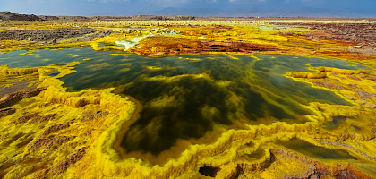

RTR: Imperium Surrectum
RTR: Imperium SurrectumStone Quarry
3 levels, each replacing the one before it — you upgrade in place rather than building alongside.
Stone Quarry (Industry) → Stone Cutter (Industry) → Stone Exports (Industry)
Levels at a glance
| Level | Cost | Build time | Minimum settlement | Upgrades to | Level | Cost | Build time | Minimum settlement | Upgrades to | ||
|---|---|---|---|---|---|---|---|---|---|---|---|
| Stone Quarry (Industry) | 800 | 2 | town | Stone Cutter (Industry) | Stone Cutter (Industry) | 1,600 | 4 | large town | Stone Exports (Industry) | ||
| Stone Exports (Industry) | 9,600 | 8 | city | — |
Costs in denarii, build time in turns.
Stone Quarry (Industry)

Where the earth’s bones are slowly chipped away, one stone at a time, this modest stone pit, provides materials for the local building projects.
When the land gives you stones, build a monument... or at least a wall.
This small pit is where the earth’s bones are unearthed one chip at a time, providing the blocks and slabs that give shape to civilization itself. Here, rugged workers break the back of mountains to meet the city’s unending demand for stone.
From defensive walls to statues of pompous governors, stone is always in demand, and while it may be slow, dusty work, the stones quarried here are the seeds from which greatness grows.
Strategy
The construction bonus to walls only applies to tier 2 minor (stone) walls and above.
| Cost | 800 denarii | Build time | 2 turns | Minimum settlement | town | Upgrades to | Stone Cutter (Industry) |
Requirements — all of these must hold before this level can be built.
- The region has Stone
- Only one heavy industry building per settlement: no other may already be built or being built here
- Government Building (Dependency, Indirect Rule, Direct Rule or Homeland)
What it does
- construction cost bonus military +5
- construction time bonus other +15
- construction cost bonus other +5
- -1 public order (happiness)
Show 5 effects that apply only in some circumstances
- construction time bonus defensive +15 — only when Wooden Palisade or a higher level is built here
- construction cost bonus defensive +10 — only when Wooden Palisade or a higher level is built here
- +2 taxable income — only when the region has no Slave Trade and no Slave Trading Hub (Urban) is built anywhere in your empire
- +4 taxable income — only when the region has Slave Trade or Slave Trading Hub (Urban) is built somewhere in your empire
- Tax bonus is due to local slave trade or factionwide supply — only when the region has Slave Trade or Slave Trading Hub (Urban) is built somewhere in your empire
Stone Cutter (Industry)

A significant stone quarry, supplying large amounts of building material for regional projects.
Where mountains turn into monuments and walls rise from rubble.
This larger quarry has expanded its operations, now supplying enough stone to fuel construction projects across the region.
From roads to towering temples, there’s hardly a structure that doesn’t owe a debt to the mighty pickaxe, for stone is the backbone of civilization, after all, who needs wood when you can have a monument that lasts forever? Or at least, until the next war.
The work is still tough, but here, where rocks become roads and rubble becomes reverence, the workers feel their efforts echo through time.
Strategy
The construction bonus to walls only applies to tier 2 minor (stone) walls and above.
| Cost | 1,600 denarii | Build time | 4 turns | Minimum settlement | large town | Upgrades to | Stone Exports (Industry) |
Requirements — all of these must hold before this level can be built.
- The region has Stone
- Government Building (Dependency, Indirect Rule, Direct Rule or Homeland)
What it does
- construction cost bonus military +10
- construction time bonus other +20
- construction cost bonus other +15
- -2 public order (happiness)
Show 5 effects that apply only in some circumstances
- construction time bonus defensive +25 — only when Wooden Palisade or a higher level is built here
- construction cost bonus defensive +15 — only when Wooden Palisade or a higher level is built here
- +4 taxable income — only when the region has no Slave Trade and no Slave Trading Hub (Urban) is built anywhere in your empire
- +8 taxable income — only when the region has Slave Trade or Slave Trading Hub (Urban) is built somewhere in your empire
- Tax bonus is due to local slave trade or factionwide supply — only when the region has Slave Trade or Slave Trading Hub (Urban) is built somewhere in your empire
Stone Exports (Industry)

Send stones far and wide, and watch the world build itself in your image. - Stone is now being exported on a large scale, building the wealth of the region one block at a time.
Send stones across the sea and let others build their empires, while you count the gold.
The region’s stones are now renowned far and wide, carried by trade caravans and merchant ships to build empires and line your treasury. These stones are desired by all, from local governors hoping to impress the populace to foreign kings eager to build enduring monuments.
Each block sold brings back silver and glory, cementing the region’s reputation as the empire’s cornerstone.
The world may be built on stone, but your wealth is built on each block that leaves these shores. And with every shipment, your coffers grow heavier, like the stones themselves.
Strategy
The construction bonus to walls only applies to tier 2 minor (stone) walls and above.
| Cost | 9,600 denarii | Build time | 8 turns | Minimum settlement | city |
Requirements — all of these must hold before this level can be built.
- Local Market or a higher level is built here
- Trading Port (River Ports or Ports) or River Port or above
- The region has Stone
- No Stone Exports (Industry) is built anywhere in your empire
- Direct Rule or Homeland
What it does
- construction cost bonus military +10
- construction time bonus other +30
- construction cost bonus other +15
- +1 trade income
- -3 public order (happiness)
- (Capital) +1 construction point (faster construction) at the cost of a 10% tax penalty
Show 5 effects that apply only in some circumstances
- construction time bonus defensive +35 — only when Wooden Palisade or a higher level is built here
- construction cost bonus defensive +20 — only when Wooden Palisade or a higher level is built here
- +5 taxable income — only when the region has no Slave Trade and no Slave Trading Hub (Urban) is built anywhere in your empire
- +10 taxable income — only when the region has Slave Trade or Slave Trading Hub (Urban) is built somewhere in your empire
- Tax bonus is due to local slave trade or factionwide supply — only when the region has Slave Trade or Slave Trading Hub (Urban) is built somewhere in your empire